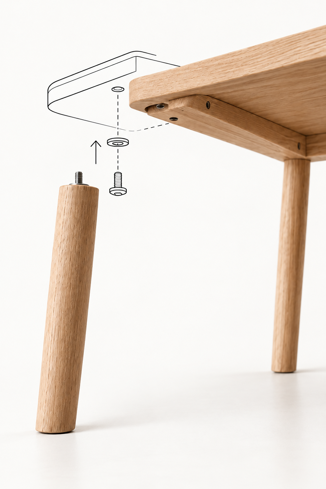

A LITTLE GUIDANCE. A LOT LESS GUESSWORK.
From manual
to made.
Your instructions. One clear step at a time.
PDFs or photos

“Where do I start?”
From a page of instructions to a guide
you can pause, replay, and understand.
LESS GUESSING. MORE MAKING.
Your manual.
A clearer path forward.
- 01
Bring what you have.
Upload a PDF, add pictures, or photograph the pages. Keep everything together.
- 02
Choose how you learn.
Animated instructions, a matching 3D template, or both. Review the steps before starting.
- 03
Go at your own pace.
Finish a step before moving on. Need another look? Replay it slowly or zoom into the manual.
YOUR WORKSPACE
Let’s put it together.
Start with your manual. Keep the next step simple.
Drop PDFs or JPG, PNG, WebP photos here. Add more files at any time.
Phone: use your camera. Desktop: choose an existing photo. Up to 60 pages per project.
Understand your manual
Checking AI connection…Furniture, TV setup, devices, or another manufacturer’s product. Your uploaded pages are the source of every step.
A few details before we begin
3 · REVIEW YOUR STEPS
Connect a 3D assembly
Choose this only when your manual matches one of these structures. The view animates a configurable model and shows your manual alongside it. It does not reconstruct an arbitrary object from photos.
For other products, the animated manual guide is available. Automatic custom 3D generation is not connected in this version.
Let’s take it more slowly.
Choose another way to follow this step. These views use your manual’s existing instructions.
Zoom into the page to inspect the drawing. Compare the parts and their orientation before continuing.